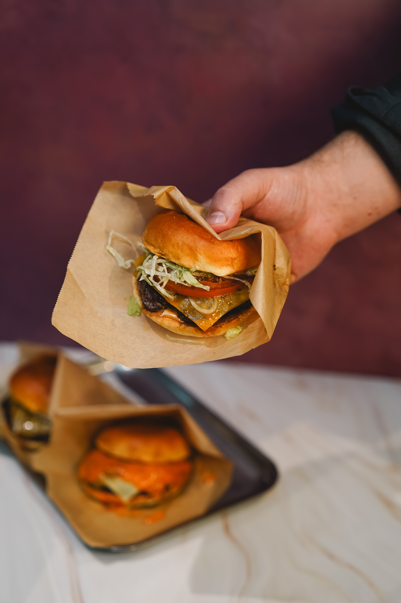

About Skene
Skene is the beauty of turning nothing into something meaningful. Since childhood, Dhenzel Manalo has seen the world through a creative lens, always drawn to moments and stories hidden in everyday life. What started as simple curiosity grew into a deeper vision. One that seeks to express feeling, memory, and meaning through visual art. Skene is tells a story of how anyone with endless visions, can quietly build up a path with patience and purpose. Every creation is a reflection of that journey, where imagination slowly becomes something real.

Dinner district burger
Dinner District Tacos

From vision to reality
Our Story
Skene is a creative studio founded by Dhenzel Manalo, a passionate visualizer. With a vision to bring imagination to life, Skene specializes in creating unique and meaningful visual experiences. From concept to creation, Skene is dedicated to crafting stories that resonate with audiences and inspire creativity.
Skene transforms imagination into meaningful visual storytelling, bringing emotion, perspective, and creativity into every piece.